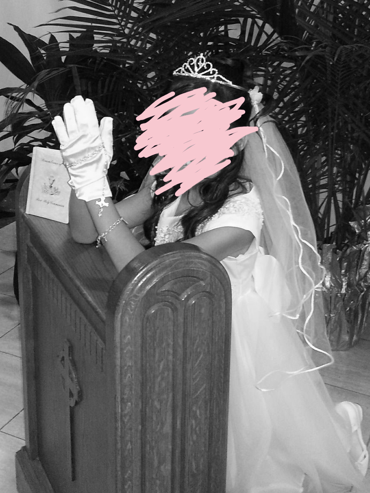

A Personal Archive
Not a curated portfolio. Art, design, and everything in between.
BROWSE ARCHIVE
About the Artist
I'm Leah Cortez, a Chicana artist and designer from Corpus Christi, South Texas. I make work about identity, religion, and the uncomfortable across graphic design, printmaking, illustration, and mixed media. This site is my archive.
✦ ABOUT THIS ARCHIVE
A personal record of my favorite pieces across classes, mediums, and years. Not everything I've made—just the work that feels most honest to me.
Featured
Recent Addition

The Unholy Gaze
Aquatint Etching • 2025
Unholy Gaze is about how religion often frames women as unholy—something to be watched, judged, and controlled. Through aquatint textures and stark contrast, the work emphasizes vulnerability and power imbalance, confronting the way religious structures reduce women to symbols of virtue or corruption.
View Project →Recognition
Get In Touch
Connect with me on social media or send a direct message: